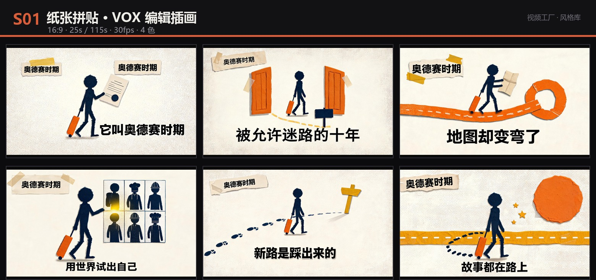
S01已验证
纸张拼贴 · VOX 编辑插画
把观点做成一张手工拼贴的杂志跨页，让纸片自己动起来。
奶油纸底 #F2E8D5陶土橙 #D95D39深藏蓝 #1F2D50芥末黄 #E8A33D

把观点做成一张手工拼贴的杂志跨页，让纸片自己动起来。
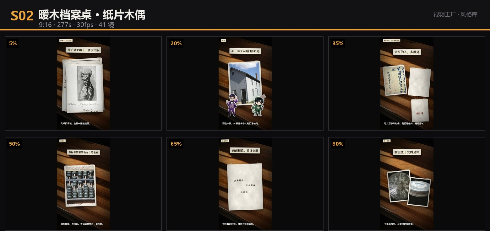
把知识摊在一张胡桃木桌上，用纸片、老照片和手写批注演给观众看。
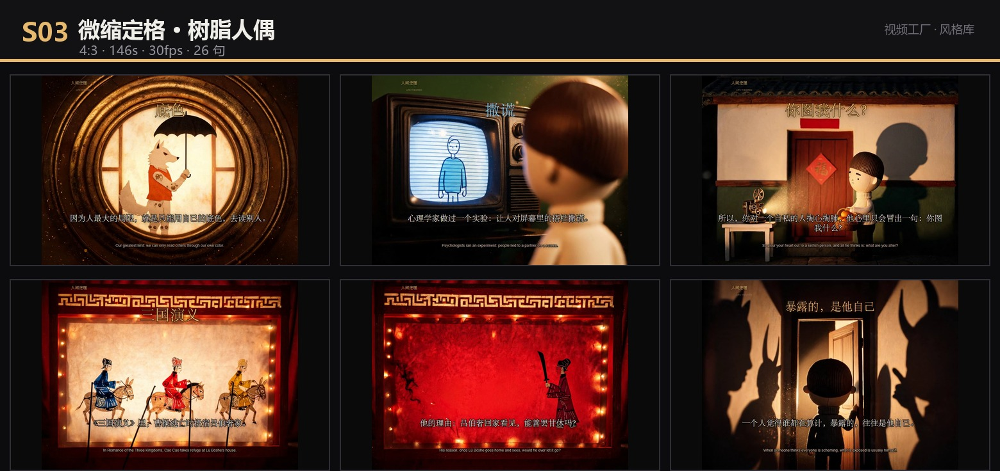
把人性实验放进一个2.5头身的树脂微缩场景里，用一束硬光照出阴影。
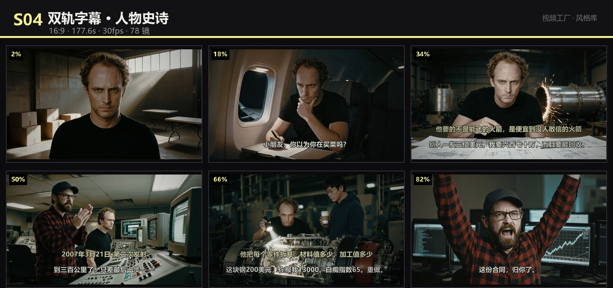
金色题注交代何时何地，白色对白推动谁说了什么，红色只留给转折。
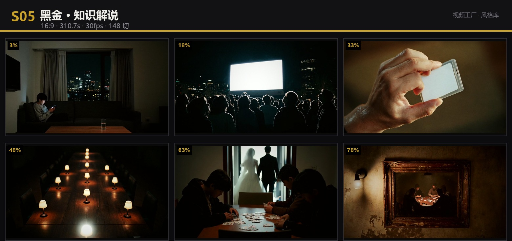
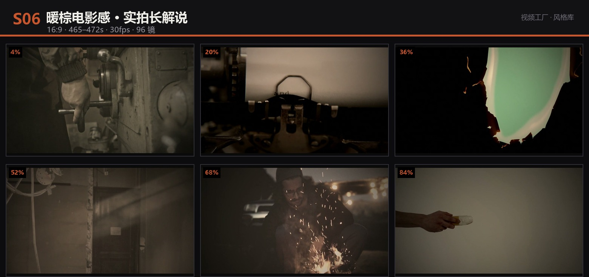
用免版权实拍素材剪出电影感，第二人称把观众拉进问题里，5-8分钟不冷场。
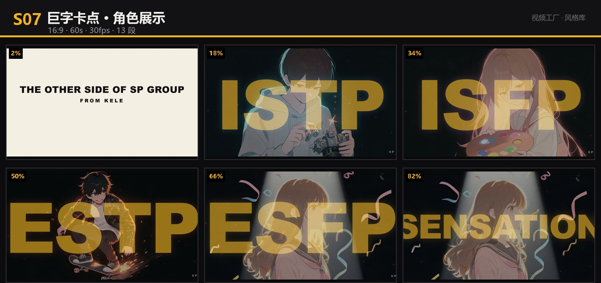
巨幅英文压在角色脸上，亮底是理想，暗底是现实，一切跟着鼓点切。
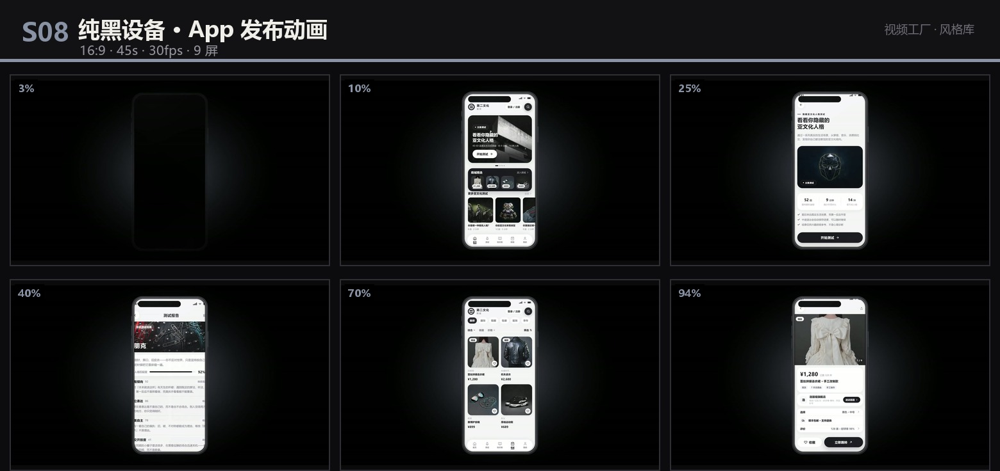
纯黑里慢慢浮出一台手机，屏幕亮起，9屏功能跟着旁白走一遍。
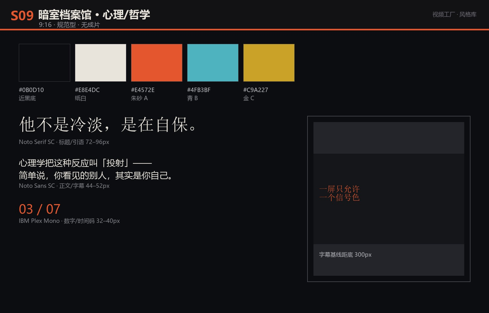
近黑底上只放一句话、一个概念、一种信号色；让观众先被打动，再被说服。
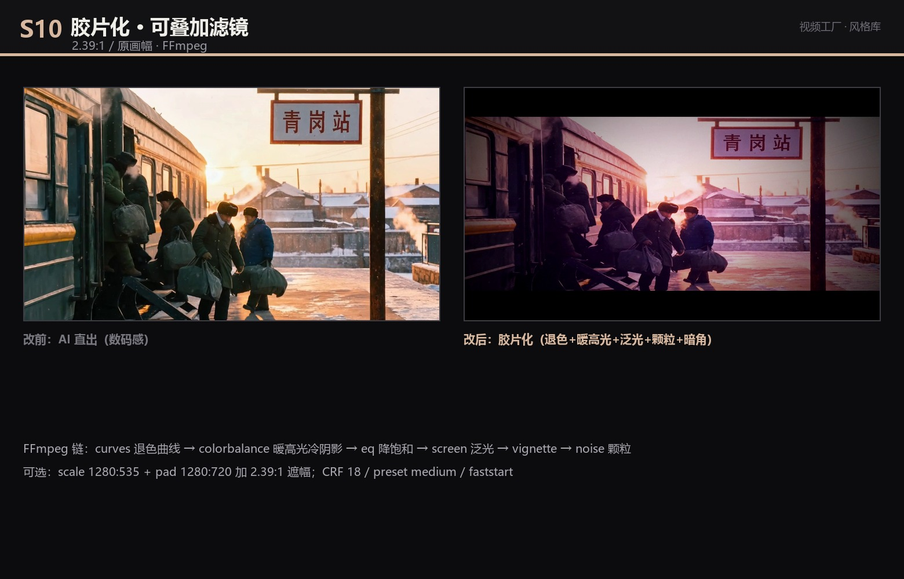
一条FFmpeg链，把任何AI/实拍素材变成退色、暖高光、泛光、颗粒、暗角的胶片质感。
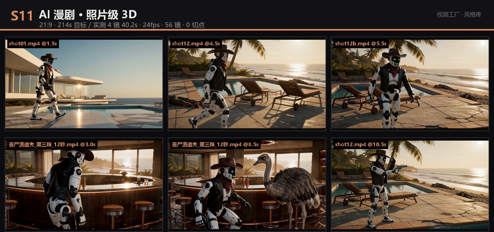
21:9 复古未来主义动作短片：长剧本一次喂进去，按 ≤30s 切单元，尾帧接首帧；单次生成 12s 长镜，成片剪到 2–4 秒一刀。
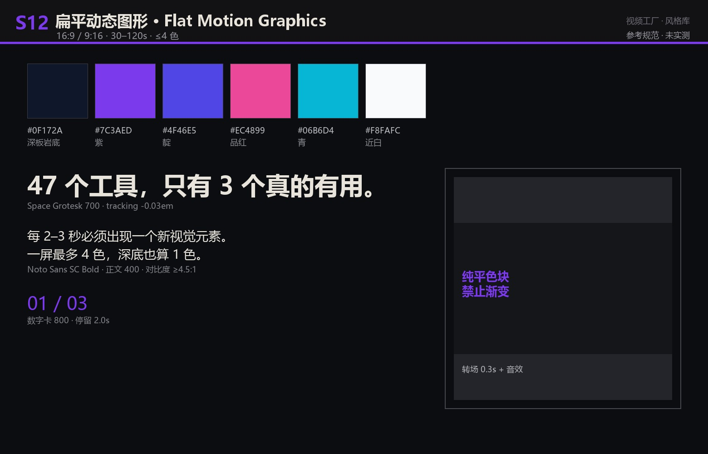
深色底上只用色块、几何和粗字，每 2–3 秒换一个视觉元素，把「讲不清」讲成「一眼懂」。
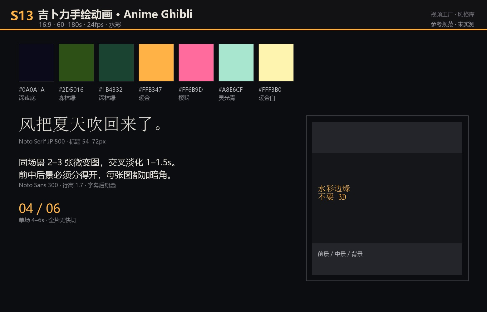
水彩边缘 + 明显的前中后景 + 暖金与森林绿；用同一场景 2–3 张微变图交叉淡化假装运动。
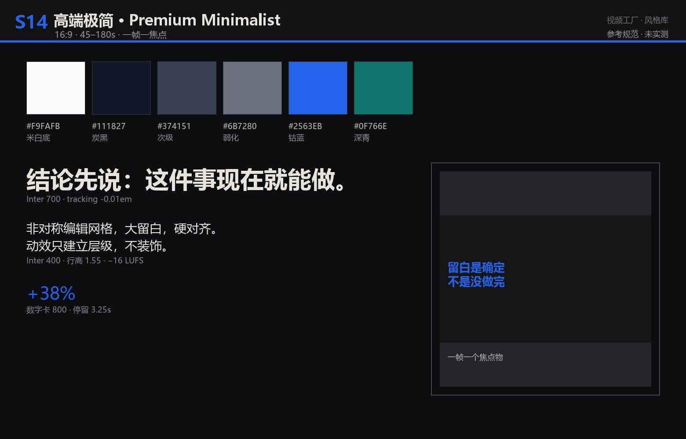
米白纸面、炭黑字、一点钴蓝；留白不是空，是在说「我很确定」。
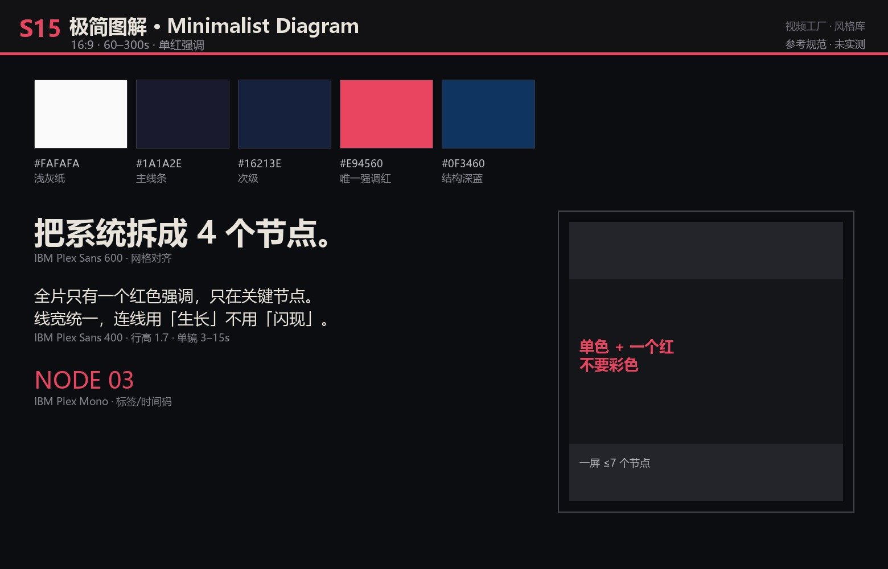
浅灰纸面、细黑线、方形节点，全片只有一个红色强调色——像教授在白板上把一件事拆开。
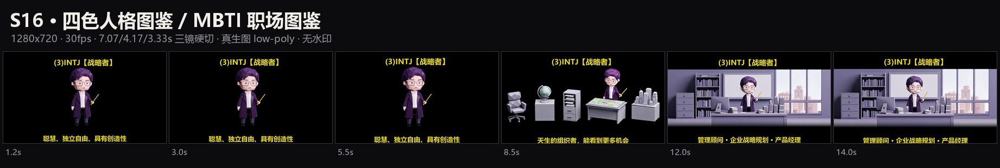
黑底单人 7 秒、道具横排 4 秒、环境横条 3.3 秒；14.3 秒一个人格，99 BPM 不停嘴。